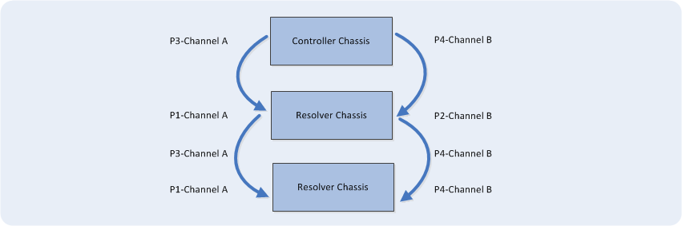

How To – Daisy Chain the Controller, RDVT and Resolver Chassis
This How To provides the steps and information required to daisy chain the controller, RDVT and resolver chassis. Multiple chassis can be daisy chained (wired together in sequence) if different engines require different simulator card configurations.
To Daisy Chain the Controller and Resolver Chassis (if required)
- Connect J2 of chassis 1 to J1 of chassis 2.
This sends the same command signal to each chassis.
- J1 - Resolver Channel A Input
- J2 - Resolver Channel A Output
- J3 - Resolver Channel B Input
- J4 - Resolver Channel B Output
- J5 - Resolver Output to Engine

To Daisy Chain the Controller and RVDT Chassis (if required)
- Connect J2 of chassis 1 to J1 of chassis 2.
This sends the same command signal to each chassis.
- J1 - RVDT Channel A Input
- J2 - RVDT Channel A Output
- J3 - RVDT Channel B Input
- J4 - RVDT Channel B Output
- J5 - RVDT Output to Engine